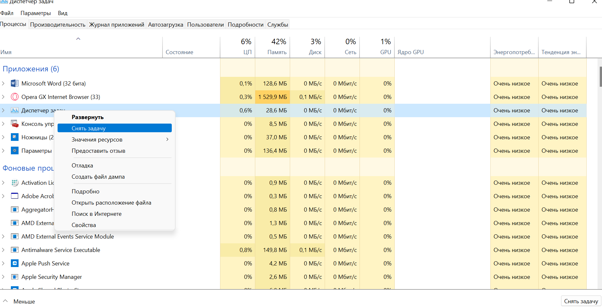
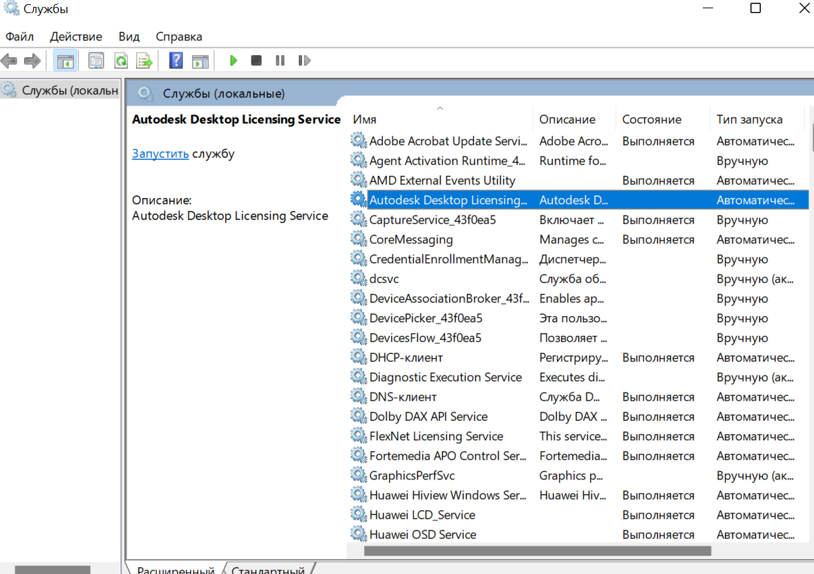

Тонкая настройка освобождает ресурсы оперативной памяти и процессора, а также снижает нагрузку на жёсткий диск за счёт уменьшения количества операций по записи истории работы приложений в системные журналы.
Возможности начинаются с момента установки операционной системы на машину. Такие как: настройки конфиденциальности. (Отключение видимости геолокации устройства, Рекламные предложения, отправка ошибок в системе компании разработчика. ) В пункте персонализация, так же можно отключить персонализированное распознования голоса, ввода с клавиатуры. Так же можно настроить работу с сетью. В частности работа с браузерами. Возможность подключить автоматическое предугалование веб страниц.

Так же при установленной системе можно настроить какую информацию может получать компания разработчик о действиях в этой системе. Так же можно отключить доступ приложений к определённым данным системе. Стоит отметить так же возможность отключать процессы в диспетчере задач.

Так же система позволяет настраивать работу служб системы. Через пункт службы в операционной системе
 Так же система позволяет настраивать работу в приложениях Возможность отключения и включения компонентов Windiws